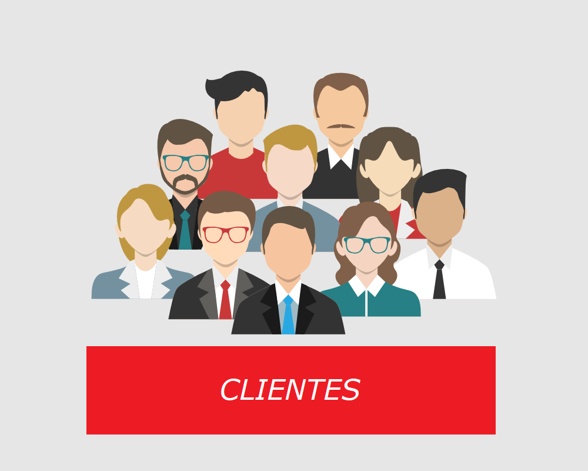
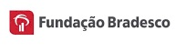
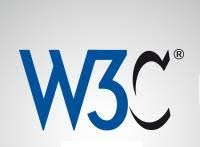
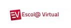
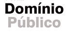

A Instituição Fundação Bradesco é uma instituição benemerente com 40 escolas próprias e outras iniciativas de inclusão social.

Para divulgar as especificações dos padrões web, o W3C Brasil oferece alguns cursos para filiados brasileiros e parceiros interlocutores.

A Escola Virtual está à disposição de alunos, ex-alunos, educadores e funcionários da Fundação Bradesco, além de pessoas da comunidade.

O "Portal Domínio Público", lançado em novembro de 2004, propõe o compartilhamento de conhecimentos de forma equânime na internet.